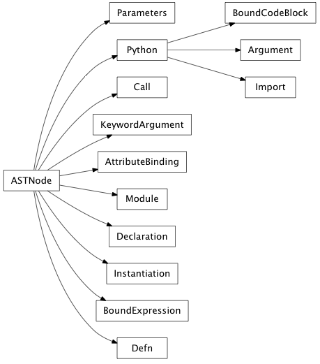

parsing Package¶
analyzer Module¶
enaml_ast Module¶

- class enaml.parsing.enaml_ast.ASTNode(lineno)[source]¶
Bases: object
The base Enaml AST node.
- lineno¶
(int) The line number in the source code that created this node.
- lineno
- class enaml.parsing.enaml_ast.Module(doc, body, lineno)[source]¶
Bases: enaml.parsing.enaml_ast.ASTNode
An AST node representing an Enaml module.
- doc¶
(str) The module’s documentation string.
- body¶
(list) A list of ast nodes comprising the body of the module.
- doc
- body
- class enaml.parsing.enaml_ast.Python(py_ast, code, lineno)[source]¶
Bases: enaml.parsing.enaml_ast.ASTNode
An AST node representing a chunk of pure Python code.
- py_ast¶
(ast.AST) A Python ast node.
- code¶
(types.CodeType) The compiled Python code object for the py_ast.
- py_ast
- code
- class enaml.parsing.enaml_ast.Import(py_ast, code, lineno)[source]¶
Bases: enaml.parsing.enaml_ast.Python
A _PyNode representing a normal Python import statement.
- class enaml.parsing.enaml_ast.Declaration(name, base, identifier, doc, body, lineno)[source]¶
Bases: enaml.parsing.enaml_ast.ASTNode
An AST node representing an Enaml declaration.
- name¶
(str) The name of the declaration.
- base¶
(Python) A Python node which represents the base type of the declaration.
- identifier¶
(str) The local identifier to use for instances of the declaration.
- doc¶
(str) The documentation string for the declaration.
- body¶
(list) A list of AST nodes that comprise the body of the declaration.
- name
- base
- identifier
- doc
- body
- class enaml.parsing.enaml_ast.Instantiation(name, identifier, body, lineno)[source]¶
Bases: enaml.parsing.enaml_ast.ASTNode
An AST node representing a declaration instantiation.
- name¶
(str) The name of declaration being instantiated.
- identifier¶
(str) The local identifier to use for the new instance.
- body¶
(list) A list of AST nodes which comprise the instantiation body.
- name
- identifier
- body
- class enaml.parsing.enaml_ast.AttributeBinding(name, binding, lineno)[source]¶
Bases: enaml.parsing.enaml_ast.ASTNode
An AST node which represents an expression attribute binding.
- name¶
(str) The name of the attribute being bound.
- binding¶
(ast node) The ast node which represents the binding.
- name
- binding
- class enaml.parsing.enaml_ast.BoundExpression(op, expr, lineno)[source]¶
Bases: enaml.parsing.enaml_ast.ASTNode
An ast node which represents a bound expression.
- op¶
(str) The name of the operator that will perform the binding.
- expr¶
(Python) A Python ast node that reprents the bound expression.
- op
- expr
- class enaml.parsing.enaml_ast.BoundCodeBlock(py_ast, code, lineno)[source]¶
Bases: enaml.parsing.enaml_ast.Python
An ast Node which represents a bound block of Python code.
- class enaml.parsing.enaml_ast.Defn(name, parameters, doc, body, lineno)[source]¶
Bases: enaml.parsing.enaml_ast.ASTNode
An ast Node which represents a defn block.
- name¶
(str) The name of the defn block.
- parameters¶
(Parameters) A Parameters node for the parameters passed to the defn.
- doc¶
(str) The documentation string of the defn.
- body¶
(list) A list of ast nodes comprising the body of the defn.
- name
- parameters
- doc
- body
- class enaml.parsing.enaml_ast.Parameters(names, defaults, lineno)[source]¶
Bases: enaml.parsing.enaml_ast.ASTNode
An ast Node representing the parameters definition of a defn.
- names¶
(list) A list of strings which are the names of the parameters.
- defaults¶
(list) A list of Python nodes representing any default parameter values.
- names
- defaults
- class enaml.parsing.enaml_ast.Call(name, arguments, lineno)[source]¶
Bases: enaml.parsing.enaml_ast.ASTNode
An ast Node representing a defn call.
- name¶
(str) The name of the defn being called.
- arguments¶
(list) A list of Argument or KeywordArgument nodes which are the arguments being passed to the defn.
- name
- arguments
- class enaml.parsing.enaml_ast.Argument(py_ast, code, lineno)[source]¶
Bases: enaml.parsing.enaml_ast.Python
An ast node representing an argument passed to a defn.
- class enaml.parsing.enaml_ast.KeywordArgument(name, argument, lineno)[source]¶
Bases: enaml.parsing.enaml_ast.ASTNode
An ast node representing a keyword argument passed to a defn.
- name¶
(str) The name of the keyword argument.
- argument¶
(Argument) An Argument node which is the value of the keyword argument.
- name
- argument
parser Module¶
- enaml.parsing.parser.translate_operator(op)[source]¶
Converts a symbolic operator into a string of the form __operator_<name>__ where <name> is result of translating the symbolic operator using the operator_table.
- enaml.parsing.parser.raise_enaml_syntax_error(msg, lineno)[source]¶
Our own syntax error to punt on parsing since raising a regular SytaxError is special cased by ply.
- enaml.parsing.parser.set_locations(node, lineno, col_offset)[source]¶
Recursively set the line number and col_offset on every node in the tree descended from node. Similar to ast.fix_locations, but forces changes.
- enaml.parsing.parser.p_enaml1(p)[source]¶
enaml : enaml_module ENDMARKER | enaml_module NEWLINE ENDMARKER
- enaml.parsing.parser.p_enaml_module_body1(p)[source]¶
enaml_module_body : enaml_module_body enaml_module_item
- enaml.parsing.parser.p_enaml_raw_python(p)[source]¶
raw_python : PY_BLOCK_START NEWLINE PY_BLOCK PY_BLOCK_END NEWLINE
- enaml.parsing.parser.p_declaration(p)[source]¶
declaration : NAME LPAR test RPAR COLON declaration_body
- enaml.parsing.parser.p_declaration_body1(p)[source]¶
declaration_body : NEWLINE INDENT declaration_body_items DEDENT
- enaml.parsing.parser.p_declaration_body2(p)[source]¶
declaration_body : NEWLINE INDENT identifier declaration_body_items DEDENT
- enaml.parsing.parser.p_declaration_body3(p)[source]¶
declaration_body : NEWLINE INDENT STRING NEWLINE declaration_body_items DEDENT
- enaml.parsing.parser.p_declaration_body4(p)[source]¶
declaration_body : NEWLINE INDENT STRING NEWLINE identifier declaration_body_items DEDENT
- enaml.parsing.parser.p_declaration_body_items1(p)[source]¶
declaration_body_items : declaration_body_item
- enaml.parsing.parser.p_declaration_body_items2(p)[source]¶
declaration_body_items : declaration_body_items declaration_body_item
- enaml.parsing.parser.p_instantiation_body1(p)[source]¶
instantiation_body : NEWLINE INDENT instantiation_body_items DEDENT
- enaml.parsing.parser.p_instantiation_body2(p)[source]¶
instantiation_body : NEWLINE INDENT identifier instantiation_body_items DEDENT
- enaml.parsing.parser.p_instantiation_body_items1(p)[source]¶
instantiation_body_items : instantiation_body_item
- enaml.parsing.parser.p_instantiation_body_items2(p)[source]¶
instantiation_body_items : instantiation_body_items instantiation_body_item
- enaml.parsing.parser.p_instantiation_body_item3(p)[source]¶
instantiation_body_item : attribute_binding
- enaml.parsing.parser.p_defn_parameters2(p)[source]¶
defn_parameters : LPAR defn_parameters_list RPAR
- enaml.parsing.parser.p_defn_parameters_list2(p)[source]¶
defn_parameters_list : defn_parameter COMMA
- enaml.parsing.parser.p_defn_parameters_list3(p)[source]¶
defn_parameters_list : defn_parameters_list_list defn_parameter
- enaml.parsing.parser.p_defn_parameters_list4(p)[source]¶
defn_parameters_list : defn_parameters_list_list defn_parameter COMMA
- enaml.parsing.parser.p_defn_parameters_list_list1(p)[source]¶
defn_parameters_list_list : defn_parameter COMMA
- enaml.parsing.parser.p_defn_parameters_list_list2(p)[source]¶
defn_parameters_list_list : defn_parameters_list_list defn_parameter COMMA
- enaml.parsing.parser.p_defn_body2(p)[source]¶
defn_body : NEWLINE INDENT STRING NEWLINE defn_body_items DEDENT
- enaml.parsing.parser.p_defn_body_items2(p)[source]¶
defn_body_items : defn_body_items defn_body_item
- enaml.parsing.parser.p_enaml_arguments2(p)[source]¶
enaml_arguments : LPAR enaml_arguments_list RPAR
- enaml.parsing.parser.p_enaml_arguments_list2(p)[source]¶
enaml_arguments_list : enaml_argument COMMA
- enaml.parsing.parser.p_enaml_arguments_list3(p)[source]¶
enaml_arguments_list : enaml_arguments_list_list enaml_argument
- enaml.parsing.parser.p_enaml_arguments_list4(p)[source]¶
enaml_arguments_list : enaml_arguments_list_list enaml_argument COMMA
- enaml.parsing.parser.p_enaml_arguments_list_list1(p)[source]¶
enaml_arguments_list_list : enaml_argument COMMA
- enaml.parsing.parser.p_enaml_arguments_list_list2(p)[source]¶
enaml_arguments_list_list : enaml_arguments_list_list enaml_argument COMMA
- enaml.parsing.parser.p_enaml_operator(p)[source]¶
enaml_operator : EQUAL | COLONEQUAL | LEFTSHIFT | RIGHTSHIFT | ATEQUAL | AMPEREQUAL | DOLLAREQUAL | VBAREQUAL | LESSMINUS | MINUSGREATER | VBARGREATER | LESSVBAR
- class enaml.parsing.parser.Arguments(args=None, keywords=None, starargs=None, kwargs=None)[source]¶
Bases: object
- enaml.parsing.parser.p_import_from2(p)[source]¶
import_from : FROM dotted_name IMPORT import_as_names
- enaml.parsing.parser.p_import_from3(p)[source]¶
import_from : FROM dotted_name IMPORT LPAR import_as_names RPAR
- enaml.parsing.parser.p_import_from4(p)[source]¶
import_from : FROM import_from_dots dotted_name IMPORT STAR
- enaml.parsing.parser.p_import_from5(p)[source]¶
import_from : FROM import_from_dots dotted_name IMPORT import_as_name
- enaml.parsing.parser.p_import_from6(p)[source]¶
import_from : FROM import_from_dots dotted_name IMPORT LPAR import_as_names RPAR
- enaml.parsing.parser.p_import_from8(p)[source]¶
import_from : FROM import_from_dots IMPORT import_as_names
- enaml.parsing.parser.p_import_from9(p)[source]¶
import_from : FROM import_from_dots IMPORT LPAR import_as_names RPAR
- enaml.parsing.parser.p_import_as_names3(p)[source]¶
import_as_names : import_as_name import_as_names_list
- enaml.parsing.parser.p_import_as_names4(p)[source]¶
import_as_names : import_as_name import_as_names_list COMMA
- enaml.parsing.parser.p_import_as_names_list1(p)[source]¶
import_as_names_list : COMMA import_as_name
- enaml.parsing.parser.p_import_as_names_list2(p)[source]¶
import_as_names_list : import_as_names_list COMMA import_as_name
- enaml.parsing.parser.p_dotted_as_names2(p)[source]¶
dotted_as_names : dotted_as_name dotted_as_names_list
- enaml.parsing.parser.p_dotted_as_names_list1(p)[source]¶
dotted_as_names_list : COMMA dotted_as_name
- enaml.parsing.parser.p_dotted_as_names_star_list2(p)[source]¶
dotted_as_names_list : dotted_as_names_list COMMA dotted_as_name
- enaml.parsing.parser.p_testlist_comp_list2(p)[source]¶
testlist_comp_list : testlist_comp_list COMMA test
- enaml.parsing.parser.p_subscriptlist4(p)[source]¶
subscriptlist : subscript subscriptlist_list COMMA
- enaml.parsing.parser.p_subscript_list2(p)[source]¶
subscriptlist_list : subscriptlist_list COMMA subscript
- enaml.parsing.parser.p_dictorsetmaker5(p)[source]¶
dictorsetmaker : test COLON test dosm_colon_list COMMA
- enaml.parsing.parser.p_dosm_colon_list2(p)[source]¶
dosm_colon_list : dosm_colon_list COMMA test COLON test
- enaml.parsing.parser.p_testlist_safe_list2(p)[source]¶
testlist_safe_list : testlist_safe_list COMMA old_test
- enaml.parsing.parser.p_varargslist2(p)[source]¶
varargslist : fpdef COMMA STAR NAME COMMA DOUBLESTAR NAME
- enaml.parsing.parser.p_varargslist6(p)[source]¶
varargslist : fpdef varargslist_list COMMA STAR NAME
- enaml.parsing.parser.p_varargslist7(p)[source]¶
varargslist : fpdef varargslist_list COMMA STAR NAME COMMA DOUBLESTAR NAME
- enaml.parsing.parser.p_varargslist8(p)[source]¶
varargslist : fpdef varargslist_list COMMA DOUBLESTAR NAME
- enaml.parsing.parser.p_varargslist12(p)[source]¶
varargslist : fpdef EQUAL test COMMA STAR NAME COMMA DOUBLESTAR NAME
- enaml.parsing.parser.p_varargslist13(p)[source]¶
varargslist : fpdef EQUAL test COMMA DOUBLESTAR NAME
- enaml.parsing.parser.p_varargslist16(p)[source]¶
varargslist : fpdef EQUAL test varargslist_list COMMA STAR NAME
- enaml.parsing.parser.p_varargslist17(p)[source]¶
varargslist : fpdef EQUAL test varargslist_list COMMA STAR NAME COMMA DOUBLESTAR NAME
- enaml.parsing.parser.p_varargslist18(p)[source]¶
varargslist : fpdef EQUAL test varargslist_list COMMA DOUBLESTAR NAME
- enaml.parsing.parser.p_varargslist20(p)[source]¶
varargslist : fpdef EQUAL test varargslist_list COMMA
- enaml.parsing.parser.p_varargslist_list3(p)[source]¶
varargslist_list : varargslist_list COMMA fpdef
enaml_compiler Module¶
- class enaml.parsing.enaml_compiler.DeclarationCompiler[source]¶
Bases: enaml.parsing.enaml_compiler._NodeVisitor
A visitor which compiles a Declaration node into a code object.
- visit_Declaration(node)[source]¶
Creates the bytecode ops for a declaration node. This visitor handles creating the component instance and storing it’s identifer if one is given.
- visit_AttributeBinding(node)[source]¶
Creates the bytecode ops for an attribute binding. This visitor handles loading and calling the appropriate operator.
- class enaml.parsing.enaml_compiler.DefnCompiler[source]¶
Bases: enaml.parsing.enaml_compiler._NodeVisitor
- visit_AttributeBinding(node)[source]¶
Creates the bytecode ops for an attribute binding. This visitor handles loading and calling the appropriate operator.
- class enaml.parsing.enaml_compiler.EnamlCompiler(module_dict)[source]¶
Bases: enaml.parsing.enaml_compiler._NodeVisitor
A compiler that will compile an enaml module ast node.
The entry point is the compile classmethod which will compile the ast into an appropriate python object and place the results in the provided module dictionary.
- classmethod compile(module_ast, module_dict)[source]¶
The main entry point of the compiler.
Parameters: - module_ast (Instance(enaml_ast.Module)) – The enaml module ast node that should be compiled.
- module_dict (dict) – The dictionary of the Python module into which we are compiling the enaml code.
- visit_Import(node)[source]¶
The import statement visitor method. This ensures that imports are performed with the enaml import hook in-place.